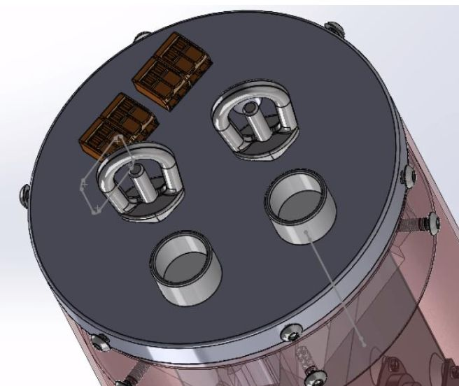
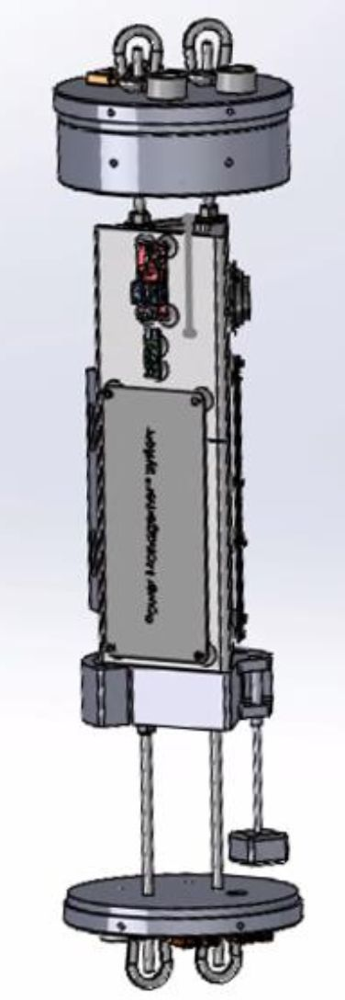

The story
After a year of heavy, hands-on design on the TVC mount, I got the opportunity to own a larger project from the management side. On the Fin Tabs rocket I took the Responsible Engineer role, trading detailed part design for ownership of how the whole vehicle came together.
The rocket is a full-scale vehicle, close to 60 pounds, that achieves active thrust-vector-control through fin tabs (small control surfaces near the aft fins) and returns safely on a dual-deployment recovery system. My job wasn't to design every subsystem. It was to make all of them integrate into one buildable, serviceable rocket.
My scope: integration and assembly
I owned how the vehicle went together, not the design of every part in it. The bar was concrete: all the subsystems (nosecone, recovery, avionics, camera bay, motor, and the fin tabs assembly) had to integrate into a single rocket within a few hours, and nothing could physically or functionally interfere with the fin-tab actuation. Holding that standard was the job.

The master assembly
To keep everyone honest, I pulled the subsystems into a single, top-down SolidWorks assembly. That master model became the reference every subteam checked their fit against, and applying GD&T to the interfaces is what let parts come together first-pass instead of after a round of rework.

Coordinating across subteams
A lot of the role was coordination across the subteams. I gathered each one's CAD assembly updates, consolidated them into the master model, and reported the integrated picture back to the system leads. The hard part was dependency. I needed the avionics bay in CAD to run mass and center-of-gravity analysis on the full rocket, but avionics couldn't finalize their bay until electronics locked the dimensions of the custom PCBs. That chain created a real bottleneck, and a lot of the role was managing around it, keeping the rest of the integration moving while one piece was blocked.
Planning and supporting the build
I planned the manufacturing timeline and kept parts machinable and cost-effective, supporting the build with waterjetting and 3D printing. I also leaned on my Invention Studio instructor access to help get components made. One concrete win was on the radial screws securing the nosecone and actuation mechanism to the body tube. Laying out a hole diagram and matching holes around a circular body tube is tedious work, and every added hole makes it worse, so fewer is always better. Applying DFAM, I confirmed six screws carried the load where the design originally called for eight. Two fewer holes meant a simpler hole diagram, a faster build, and no loss of margin.

Owning the recovery analysis
Recovery is where a rocket gets hurt, so I ran those numbers myself. I calculated the snatch forces on the bulkhead U-bolts for the transition from apogee into recovery, and the pin and bolt shear for the radial screws, sizing to a factor of safety of 3.

The Critical Design Review
I built and presented the CDR to the GNC leads, splitting the presentation with my teammate. It was the last major milestone before the year wrapped, and it's where the design has to stand up to scrutiny out loud and you defend the decisions you made.
Where it stands
The CDR is complete and component manufacturing is underway. Full integration and assembly, the part I own, is slated for early Fall 2026, when the subsystems come together into the vehicle for the first time. I'll update this with launch results once it flies.